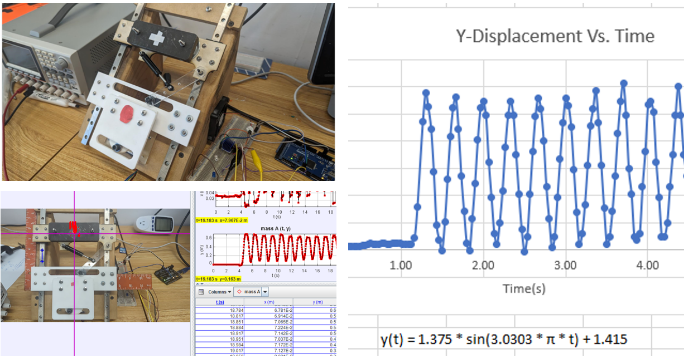
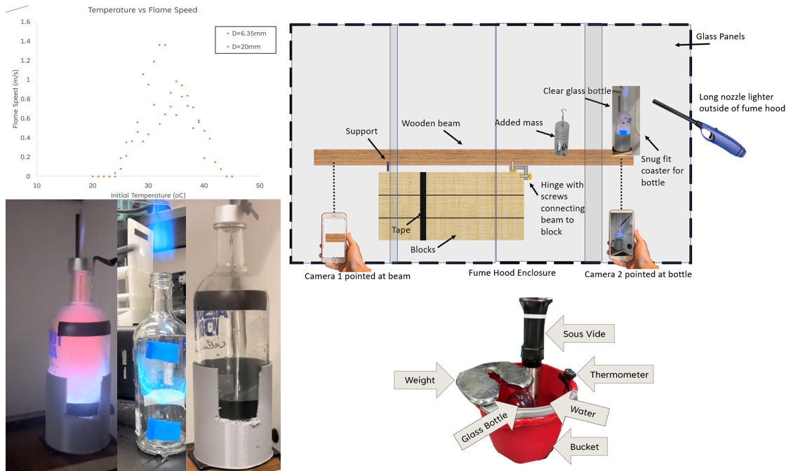

OPTIMIZING CO2 SENSOR PLACEMENT IN 41 COOPER CLASSROOMS VIA CFD AND SENSOR DATA ANALYTICS

This project focuses on optimizing CO2 sensor placement in Room 506 of 41 Cooper Square to maintain indoor air quality, crucial for student health and cognitive function. The study uses Computational Fluid Dynamics (CFD) simulations, complemented by empirical data from HOBO MX sensors and a Particles Plus 8302 Particle Counter.
Manufacturing Engineering: Plastic Injection Molding Nozzle Part
A nozzle part device was made for friction welding. The design process included the creation of a detailed CAD model, which was then split to define the welding interfaces. An injection mold cavity was designed for manufacturing the device parts, with a SolidWorks simulation conducted to validate the flow of plastic and ensure ease of injection at the identified sites.
Manufacturing Metal Ring Casting
A metal ring was designed using CAD software, followed by 3D printing in wax for investment casting. Rings are assembled into a tree structure for effective metal flow. The process includes a SolidWorks simulation to optimize the injection molding site and assess casting success. Post-casting, rings are refined through sanding and polishing, with a final comparison of the ring's mass against the predicted model. Assessment focuses on design, casting quality, and measurement precision. Materials include 3D printers, wax, metal, and casting tools.
Manufacturing Engineering: Cookie Cutter
A cookie cutter design was chosen and then adapted to be used for a cookie cutter. Its adaptation was to minimize springback experienced by the aluminium sheet when released from its compressive loads. CAD was used to position the dies normal to the mold for even pressure distribution. The initial PLA prototype served to characterize the loads experienced, thus informing the design of the upgraded CNC machiined parts. The final product achieved the client's specified tolerance, maintaining less than 1/8 inch deviation in any dimension.
Energy Efficiency Optimization of Chiller Unit Consumption
A Python Script for interfacing with excel data to track and optimize chiller unit operations. It sorts energy usage data into build and burn cycles, identifies active periods using pandas, and quantifies total power of each device (cooling towers,air handling units) within each cycle . This allows for concise documentation when optimizing efficiency of runs in terms of time and electric grid usage.
Automated Sudoku Solver using OCR and Backtracking Algorithm
A Sudoku Solver that uses a Python-based automated system to solve Sudoku puzzles from images. The solution utilizes OpenCV for image preprocessing, noise removal, and line extraction, followed by Tesseract OCR for character recognition. Finally, NumPy handles grid data operations, PIL manipulates image data, and Matplotlib visualizes the results.
Predictive Maintenance of Elevator Systems using Machine Learning
This project leverages machine learning algorithms to predict abnormal vibrations in an elevator system, aiming to optimize maintenance schedules and ensure smooth operation. By analyzing sensor data from an elevator in Brazil, the project applies Linear Regression, Random Forest, and Gradient Boosting models, achieving high accuracy in identifying potential system anomalies. It demonstrates the power of predictive analytics in improving the efficiency and safety of critical infrastructure systems
Machine Learning Project: Spam Detection Using MNB Classifier
This project develops a precise spam detection model. It reads CSV data for training, conducts advanced text preprocessing, and employs a Multinomial Naive Bayes classifier along with TF-IDF vectorization for efficient and accurate email categorization.
Forecasting Barometric Pressure in NYC using Machine Learning Models
A Comparative Analysis of ARIMA, LSTM, and Gradient Boosting Algorithms.Utilizing historical data, this project forecasts NYC's barometric pressure employing ARIMA, LSTM, and Gradient Boosting models. Scikit-learn and Pandas handle data processing and model training. A comparative analysis assesses model performance with actual vs. predicted values and future forecasts.
Vibration Project: Modeling Cooper Hyperloop's Horizontal Stability.
ManufacturingResearchExperimentation 
Designed a scaled testing rig to analyze and optimize the stability system of a Hyperloop pod by simulating an uneven track for design optimization.
Howard Silfin (ME’49) Mechanical Engineering Internship Award: Air Tunnel Project
Commissioned by the Howard D. Silfin Mechanical Engineering Internship Award to manufacture a to-scale air tunnel testing section. Utilized 3D CAD, laser cutting, and machining to create an airtight replica of the LL210 Air Tunnel's testing section.This project demonstrated a blend of technical skills, project management, and effective communication, providing a valuable hands-on learning experience.
Heat Transfer Project: Determining the Largest Heat Transfer Rate for Various Cross-Sectional Rods under Different Cooling Conditions
Performed comprehensive analysis on heat transfer in rods of diverse cross-sections, optimizing for the highest heat transfer rate under varying cooling conditions. Employed Reynolds-Nusselt correlations and numerical techniques to calculate convective coefficients and heat rates for complex cross-sections. The study offered critical insights into material behavior and heat transfer mechanisms, enhancing understanding of various flow scenarios and why certain real-word design choices like heat exchangers have been made.
Effect of Temperature on Flame Velocity and Thrust of an Isopropyl Rocket
ThermalResearchExperimentation 
Collaborated alongside the team's client to design a safer, repeatable setup for whoosh bottle data extraction. Explored temperature effects on flame velocity and thrust with a sous-vide, implemented a seesaw mechanism, and analyzed the influence of nozzle diameter. Used Tracker software, project management tools, 3D cad, and 3D printing.
Compressor Stage Design for Turbojet Engine using
Ansys Fluent
Our team aimed to design and optimize a compressor stage for a novel gas turbofan engine, meeting specific performance objectives within a constrained outer diameter. Utilizing Altair HyperMesh and ANSYS Fluent, we conducted CFD simulations, applying the k-epsilon turbulence model and manual tuning of relaxation factors for accuracy and residual regulation. The successful implementation of periodicity and profiles enabled efficient geometry representation, yielding valuable insights into the compressor's performance under varying operating conditions.
Heat Exchanger Design for Oil Cooling in a Gasoline
IC Engine using Ansys Fluent
Computational design of a compact heat exchanger to cool hot motor oil in a Gasoline IC engine. Through a combination of manual calculations, material analysis, and CFD simulations, the design achieves oil temperature reduction from 350℉ to a maximum of 215℉, while prioritizing cost-effectiveness and realistic dimensions.
Measuring the Young’s Modulus of a Vibrating Beam
This project proposes a non-destructive approach to determine the Young's modulus of unknown beam materials. By measuring the natural frequency of a vibrating cantilever beam and employing mass-spring characterization and beam theory, the Young's modulus is calculated. The study covers twelve different beams, including aluminum, brass, steel, and carbon fiber with varying dimensions.